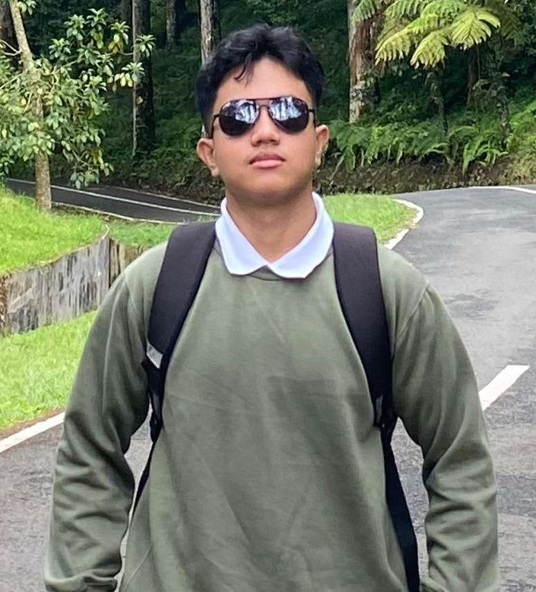

Perkenalkan nama ku I Putu Adhiatman. Aku lahir pada 13 April 2006 tepatnya di Denpasar. Aku seorang mahasiswa semester 3 di ITB STIKOM Bali. Aku sedang menempuh pendidikan di jurusan Teknologi Informasi. Aku tertarik untuk belajar lebih dalam mengenai dunia web development, khususnya pada bagian frontend development.
